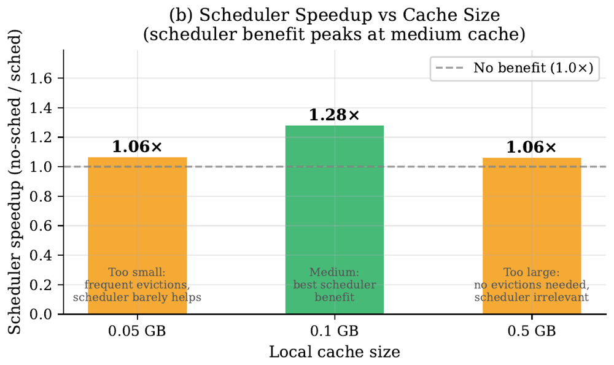
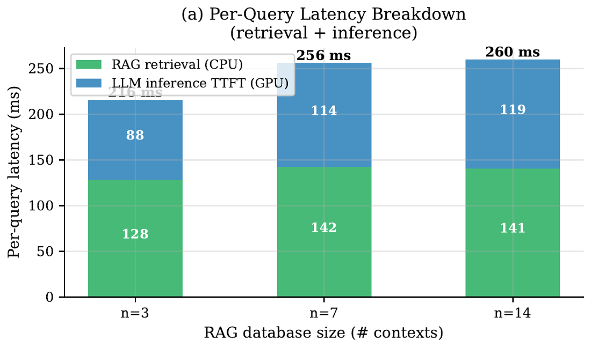

Order decides the hit rate
vLLM [1] serves Qwen2.5-1.5B [2] with LMCache [3]: KV chunks live in a local tier and spill to a remote LMCache server. Our workload is 70 requests over 14 papers. A cache only helps when requests for the same document arrive close together: going from 3 to 14 distinct documents raises mean time to first token (TTFT) from 38 to 70 ms.
So the scheduler groups requests that share a document: the first one fills the cache and the rest hit it. Mean TTFT drops from 134 ms to 100 ms, 25% lower than FIFO.
How much it helps depends on the local cache. With a tiny cache everything is evicted anyway, with a large one nothing is, so the scheduler matters most in between: 1.28x at 0.1 GB against 1.06x at both ends.


Finding the document without an id
Real requests carry free text, not an id. A RAG step [4] embeds the query and picks the closest document, and it is right for 67 of 70 requests (95.7%).
But the lookup is not free: it takes about 140 ms per query, roughly as much as the model's own time to first token.

The KV tensors of a request already say which document it refers to. Averaging them per layer, reducing with PCA and clustering with KMeans recovers the document of every request, even from a title and question of about 52 tokens with no document text.
That is 100% against RAG's 95.7%, with no retrieval call. The catch is timing: RAG answers before inference, clustering only after the first request for a document has run. Its natural uses are prefetching the matching chunks, evicting by cluster instead of by recency, and routing a request to the node that already holds its cluster.
References
- W. Kwon et al. Efficient memory management for large language model serving with PagedAttention. SOSP, 2023.
- Qwen Team. Qwen2.5 technical report. arXiv:2412.15115, 2024.
- LMCache. github.com/LMCache/LMCache
- P. Lewis et al. Retrieval-augmented generation for knowledge-intensive NLP tasks. NeurIPS, 2020.